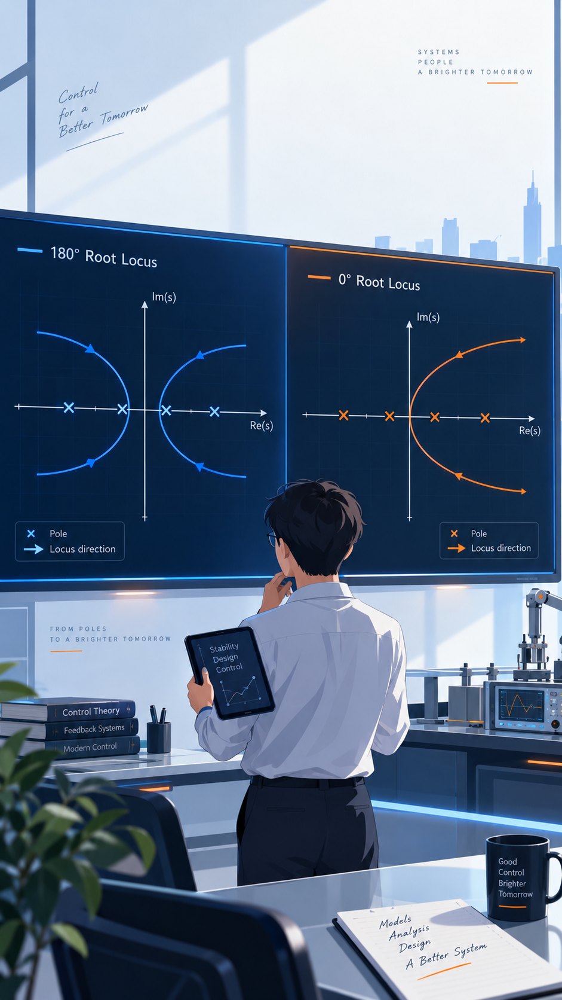

5.3
广义根轨迹
换一套"开环"，七条法则照旧
变化的参数不一定是增益，反馈不一定是负的——法则照旧，换一套"开环"而已
引
概念与黄金法则：整理成标准形
①
参量根轨迹：例5-8 圆轨迹、例5-9 根轨迹族
②
零度根轨迹：规则对照 · 例5-10
③
非最小相位系统：判型 · 例5-11
④
条件稳定系统：例5-12
学习目标：
会把任意"非标准"特征方程整理成
1+G^{*}(s)H^{*}(s)=0
，判准按 180° 还是 0° 法则，再用同一套法则画出根轨迹。

34